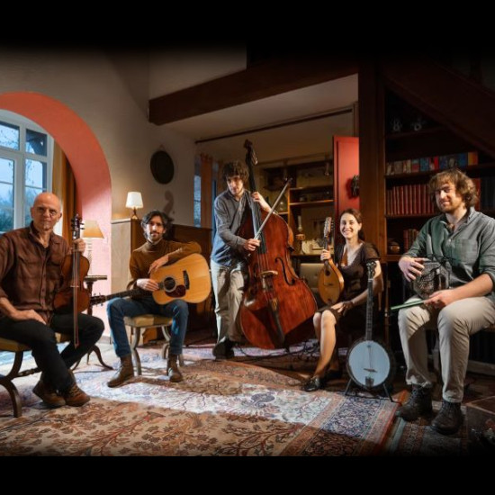

Rúnaí
Prise de son / Montage / Mixage
avec Rúnaí
#musique-trad
Pour en savoir plus, c'est par ici :
Musicien ingénieur du son diplômé du CNSMDP en 2018 et basé à Angers, je suis spécialisé dans l'enregistrement de musiques acoustiques (classique, jazz, trad...).
De la prise de son au mixage, en passant par le montage, la direction artistique et la sonorisation live, j'accompagne les artistes dans leurs projets d'enregistrements.
Voici quelques extraits choisis de projets réalisés.
Ils représentent la diversité des styles et esthétiques sur lesquels je travaille. Bonne écoute !
Prise de son / Montage / Mixage
avec Rúnaí
#musique-trad
Direction Artistique / Montage
avec Shuichi Okada et Clément Lefebvre
#musique-classique
Prise de son / Montage / Mixage
avec Hemiolia
#musique-ancienne
Prise de son / Montage / Mixage
avec Noé Clerc et son trio
#jazz
Prise de son / Montage / Mixage
avec Septentrion
#musique-vocale
Montage son pour le disque Estampie
avec Albertus Dercksen et Sylvain Calmon
#musique-contemporaine
Prise de son / Montage / Mixage
avec Les Passagères
#musique-ancienne
Prise de son live / Mixage, avec Noun
#musique-contemporaine